Investigación manual de administración de servidor Ubuntu
1. Instalación de SSH.
Opción de instalarlo junto a la distribución.
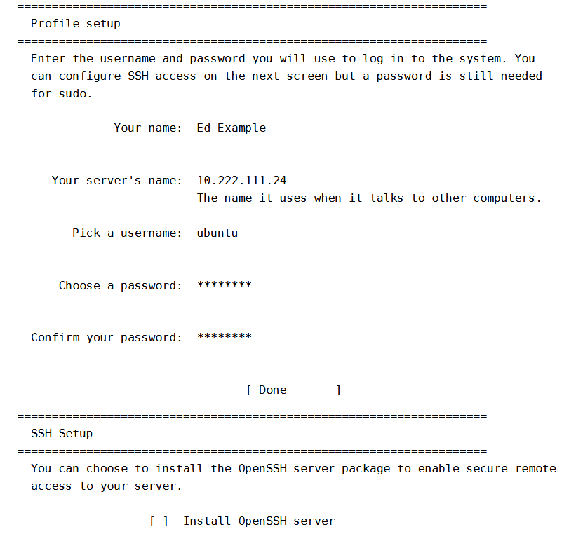Opción de instalarlo desde la terminal.
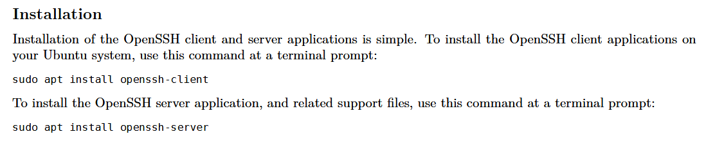2. Instalación y configuración de FTP.
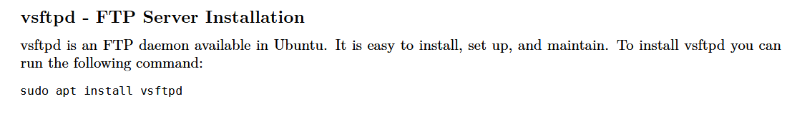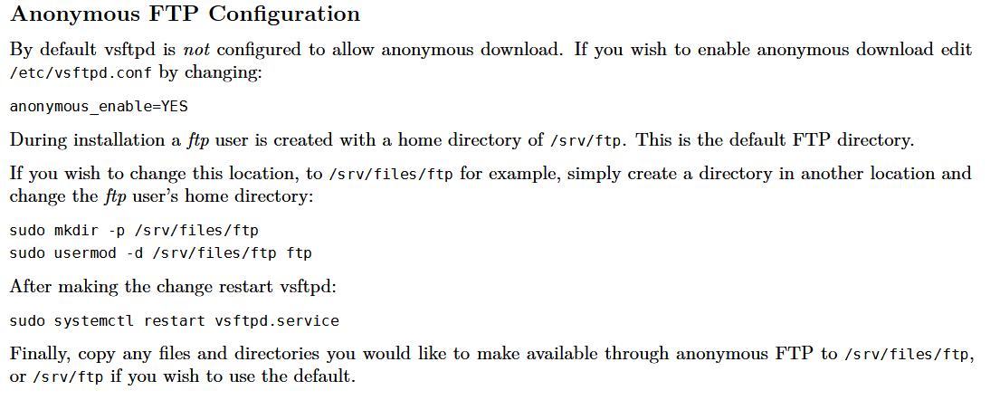
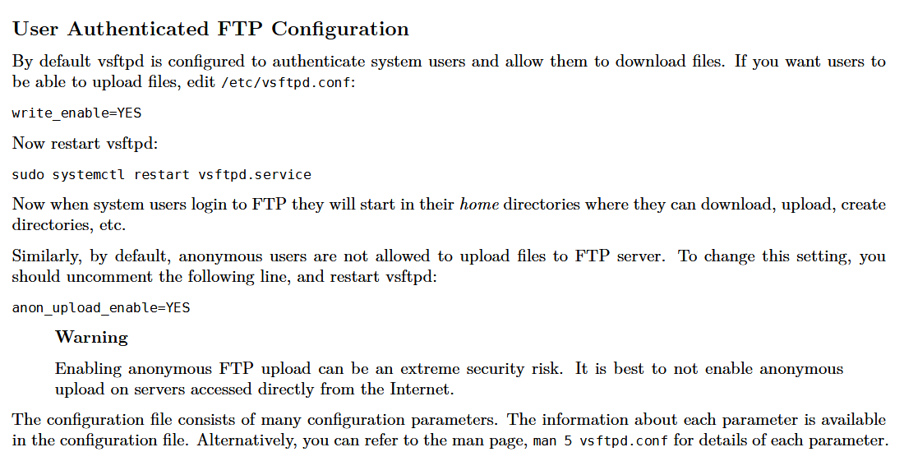
3. Instalación de servidor LAMP.
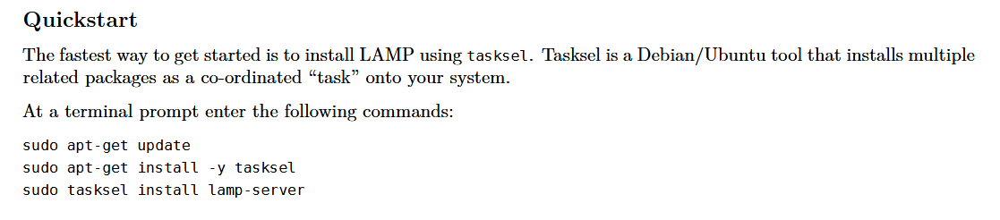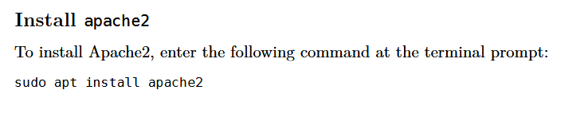
Servicios SSH, FTP, LAMP
1. SSH
Este es un texto de ejemplo
2. FTP
Este es un texto de ejemplo
3. LAMP
Este es un texto de ejemplo
Instalación de SSH y acceso al servidor Ubuntu de forma remota
1. Instalación de SSH.
Durante la instalación de la distribución de Ubuntu, se da la opción de instalar SSH de forma muy sencilla.
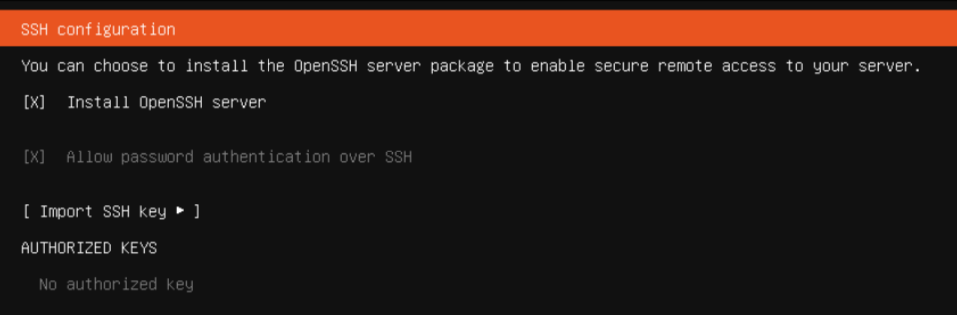En caso de no haber seleccionado esta opción, se necesita del comando "sudo apt install openssh-server".
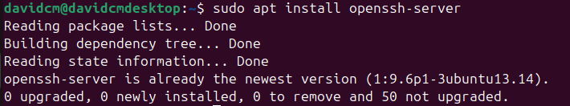2. Acceso desde la máquina local con SSH
Lo primero que se tiene que hacer, es obtener la IP con el comando "ifconfig", en este caso es: 192.168.115.129.
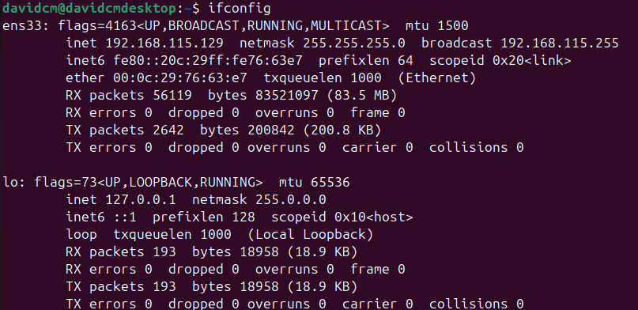Se anota la IP, para, posteriormente, ingresar el comando "ssh [nombreUsuario]@[IP]" desde la terminal local.
Después te pedirá aceptar un algoritmo SHA256 para firmar una fingerprint, se selecciona "yes" y se ingresa la contraseña.
Al realizar estos pasos, se está manejando el sistema operativo Linux, desde la terminal local (Microsoft).
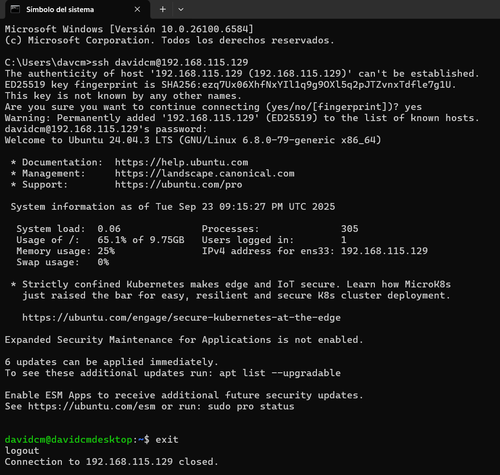Instalación y configuración de FTP para escritura y lectura. Validación de la funcionalidad
1. Instalación de FTP.
Se requiere el siguiente comando: "sudo apt install vsftpd".

2.Accesos desde la máquina local con FTP
Es un proceso muy similar al acceso con SSH, el comando es "sftp [nombreUsuario]@[IP]" y la contraseña del usuario.
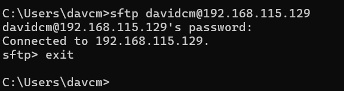3. Uso de get y put con SFTP
SFTP permite mandar archivos de una máquina a otra.
Para mandar archivos locales a la máquina virtual se usa "put" y el nombre del archivo.
En este caso, mandaremos el archivo anahuac.png que se enuentra en la parte final de mis archivos.
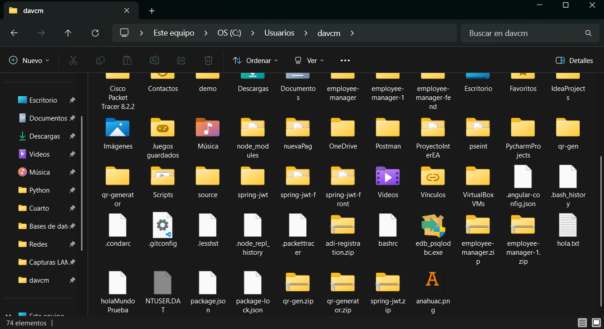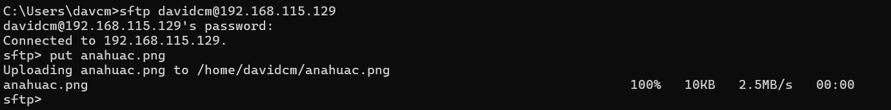
Por último, se comprueba que el archivo esté en la máquina virtual.
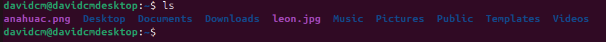Instalación LAMP y servidor HTTP
1. Actualización de APT.
El primer paso es actualizar el paquete instalador apt, de la siguiente forma:
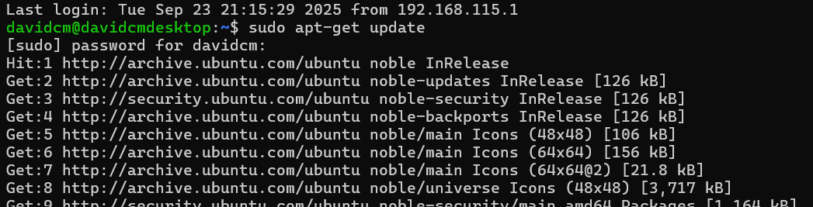2. Instalación de tasksel.
Se instala tasksel con "sudo apt-get install -y tasksel".
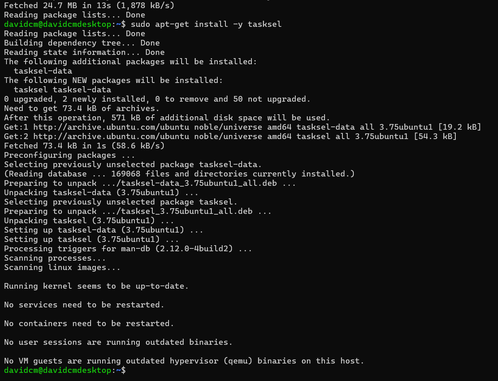3. Instalación de LAMP Server.
Con el paquete tasksel, se instala lamp-server con "sudo tasksel install lamp-server".
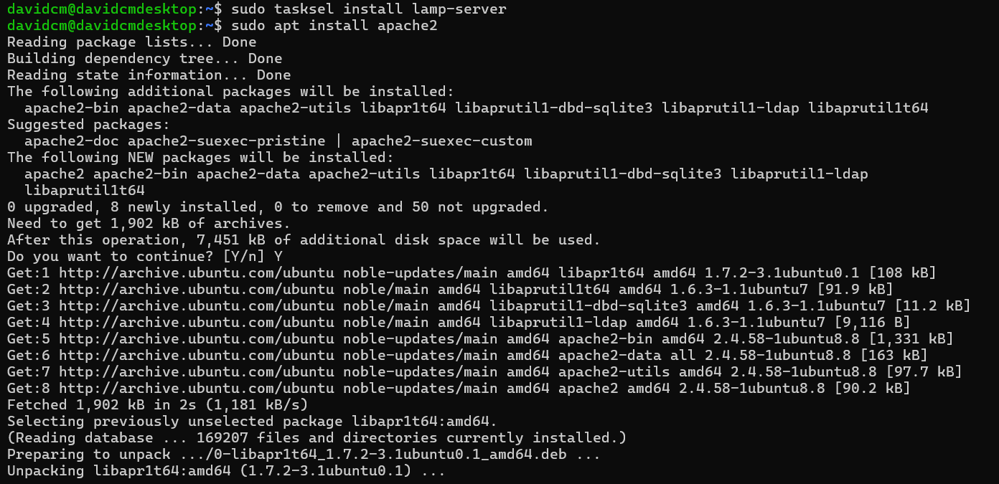4. Instalación de Apache.
Con el paquete tasksel, se instala Apache con "sudo apt install apache2".
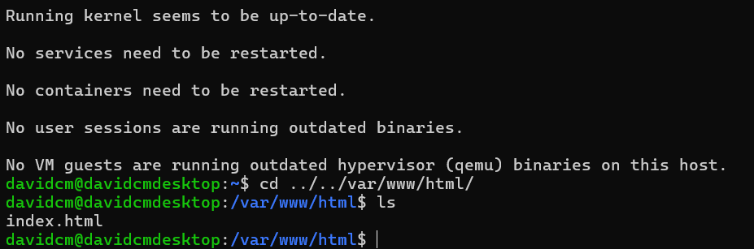5. Visualización en navegador local.
Ahora, si se ingresa la IP de la máquina virtual en el navegador local, podremos ver la página predeterminada de Apache.
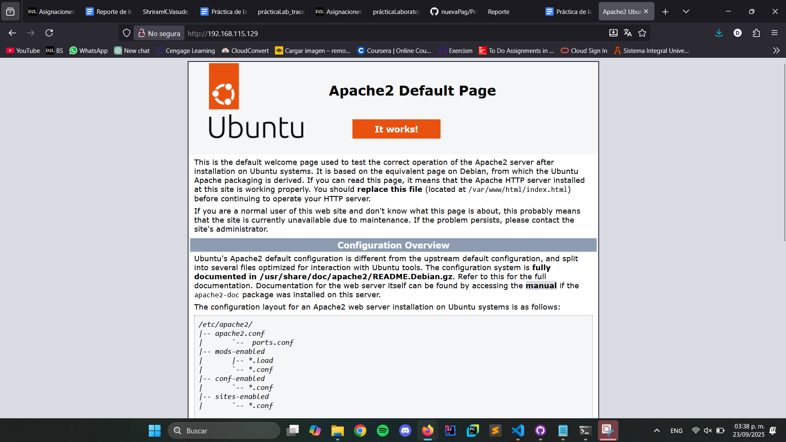6. Visualización en navegador virtual.
También se puede ingresar desde la máquina de Linux, ingresando "localhost" en el navegador.
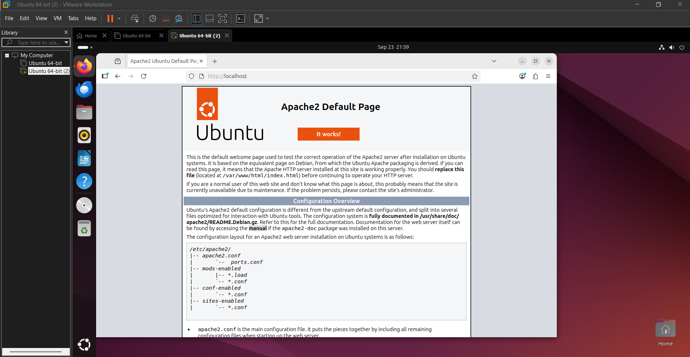Desarrolla una página Web
1. Componentes desplegados en el servidor Linux Ubuntu.
Al entrar a la máquina virtual y movernos a la carpeta var, vamos a poder ver que se instalaron componentes como www y http. Al ingresar en la carpeta, podemos ver con "ls" el index predeterminado. Creamos la carpeta de cada quien y con ayuda de nano, creamos un index para cada carpeta. Además, definimos un archivo css general que sea aplicado a toda la página.
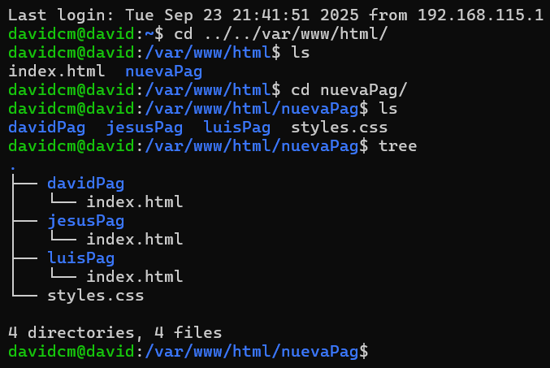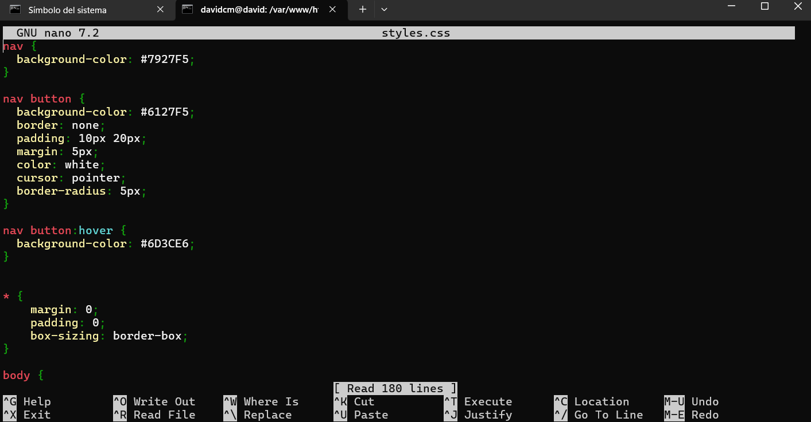
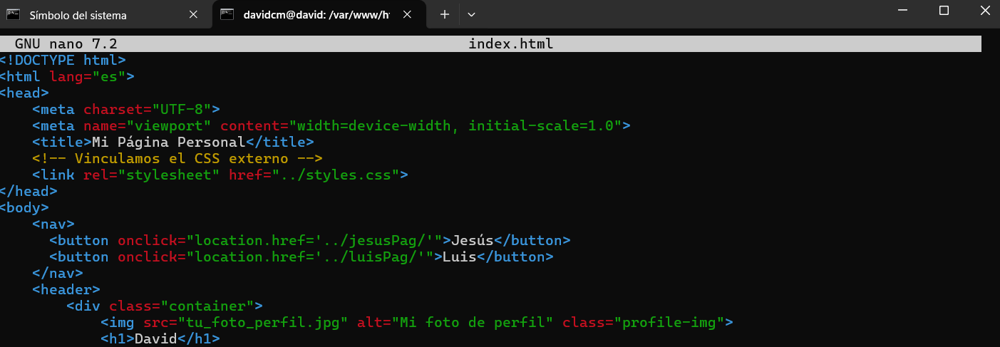
No obstante, para el desarollo del resto de la página, optamos por crear un repositorio de Git y GitHub para trabajar colaborativamente. Así mismo, usamos el editor de código de nuestra preferencia para después subir los cambios usando SFTP.
2. Página con secciones de Presentación de cada uno de los integrantes del equipo y uno o más pasatiempos o actividades que más disfruta.
3. Esquema de navegación dentro del sitio a través de ligas.
Proceso estándar de ingeniería de software.
Este es un texto de ejemplo
Conclusión
Aquí escribirimos las conclusiones de la práctica.
Este es un texto de ejemplo